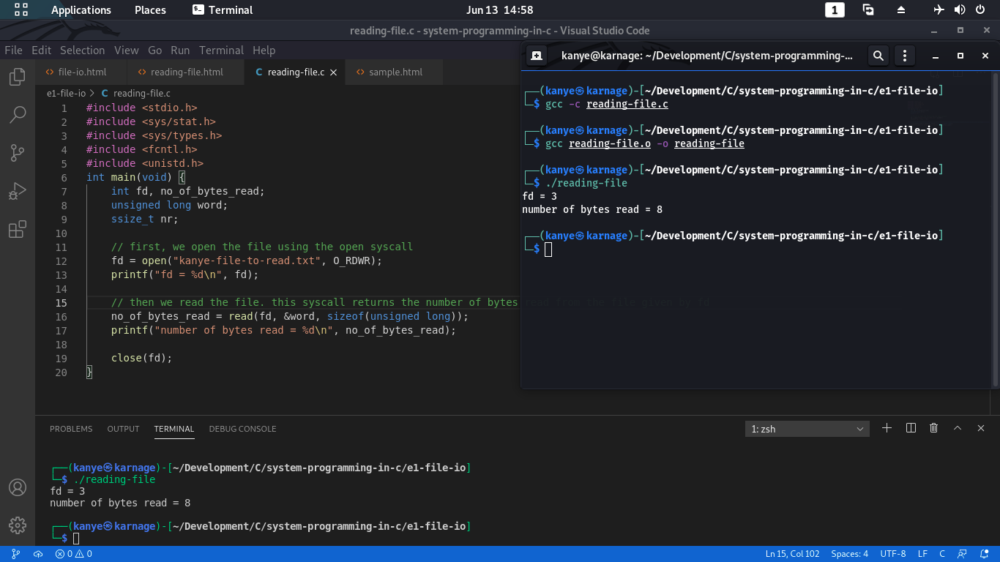

We now go into reading a file.
The most simple way for us to do this is using the syscall read().
The call takes three parameters:
- fd: the file descriptor
- buf: the buffer pointer into which the file contents are read into
- len: the length of bytes to read from the file.
Take a look at the basic example below. The number of bytes returned is 8. This is not the best way to read files using syscall read() but it is just an intro.

Return Values
When a return value from a read operation is 0, it indicates an end-of-file. In this case, no bytes were read.